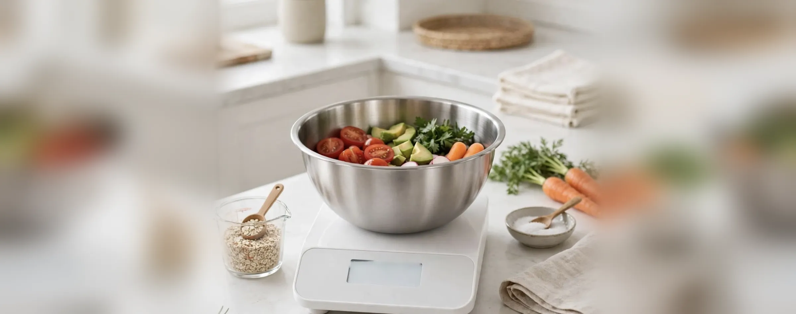

Sulla bilancia
Il piatto medio
pesato davanti a te, prima di pagare
- 350 g
- ± 5 g
- macro in chiaro
10,62 €
Guarda come si pesa

Sulla bilancia
pesato davanti a te, prima di pagare
Componi il piatto al grammo. Calorie, macro e prezzo li vedi prima di pagare.
Oppure scegli una bowlOgni ingrediente si pesa davanti a te. Scorri e guarda la bilancia, grammo per grammo.
Tolleranza massima 5 g per ingrediente. Se sbagliamo, lo correggiamo prima di consegnarti il piatto.
Vegana, con proteine vegetali.
530 kcal P 35 g C 47 g G 25 g
Farro, tofu, ceci, edamame, pomodori, avocado, salsa di soia, semi di zucca.
Il massimo delle proteine.
575 kcal P 69 g C 38 g G 15 g
Riso basmati, pollo, tacchino, uovo sodo, zucchine, mais, pomodori, salsa allo yogurt, parmigiano.
Pesce crudo, in stile poke.
480 kcal P 33 g C 39 g G 22 g
Riso basmati, salmone, gamberi, edamame, cetrioli, avocado, salsa di soia, sesamo.
Tre fasce di prezzo ogni 100 g. Il totale compare sul totem prima di pagare, insieme a calorie, macro e allergeni.
Piatto minimo 5,50 €. Un piatto medio pesa circa 350 g e costa 10,62 €.
Si sceglie a scatti di 5 g: base fino a 160 g, proteine fino a 350 g, contorni 100 g, topping e salse 20 g.
Apre mercoledì 1° settembre 2027
A dieci minuti a piedi dal campus. Ordini al totem o in cassa e ritiri al banco in un paio di minuti.
| Lunedì – venerdì | 12:00 – 14:30 19:00 – 21:30 |
|---|---|
| Sabato | 12:00 – 14:30 |
| Domenica e festivi | Chiuso |
Chiuso per ferie dal 15 luglio al 31 agosto.
App con orario di ritiro da gennaio 2028. Consegna a domicilio con Glovo e Deliveroo.